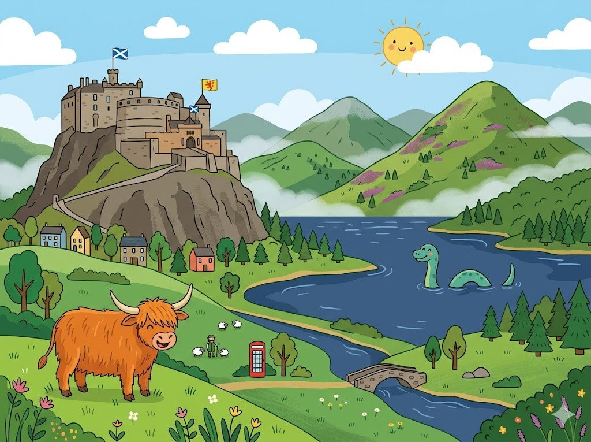
Hier stehen die wichtigsten Daten zu deinem Land. In der App baust du daraus deinen eigenen Steckbrief.
| Hauptstadt | Edinburgh |
| Kontinent | Europa |
| Sprache | Englisch |
| Währung | Pfund |
| Einwohner | etwa 5,4 Millionen Menschen |
| Fläche | rund 78.000 km² |
| Großer Berg | Ben Nevis, rund 1.345 m |
| Nachbarländer | Teil von Großbritannien, grenzt im Süden an England |
In Schottland gibt es viele berühmte Orte. Diese vier solltest du kennen.
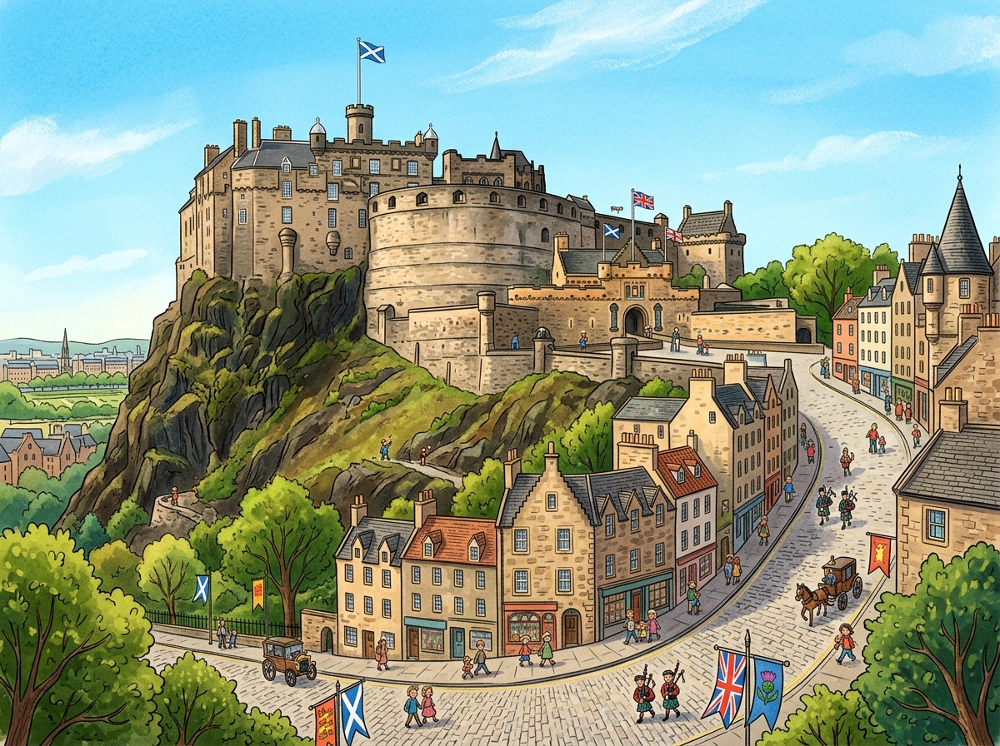
Das Schloss von EdinburghEdinburgh ist die Hauptstadt von Schottland. Mitten in der Stadt steht ein großes Schloss. Es wurde auf einem hohen Felsen gebaut. Von dort oben sieht man über die ganze Stadt. Jeden Tag wird dort eine alte Kanone abgefeuert.
Grüne Wörter für die AppEdinburghSchlosshohen Felsenüber die ganze StadtKanone
Der See Loch NessLoch Ness ist ein sehr großer und tiefer See. Das Wasser ist dunkel und kalt. Eine alte Geschichte erzählt von einem Ungeheuer im See. Die Menschen nennen es liebevoll Nessie. Bis heute hat es niemand wirklich gefunden.
Grüne Wörter für die AppLoch Nesstiefer SeeUngeheuerNessieniemand wirklich gefunden
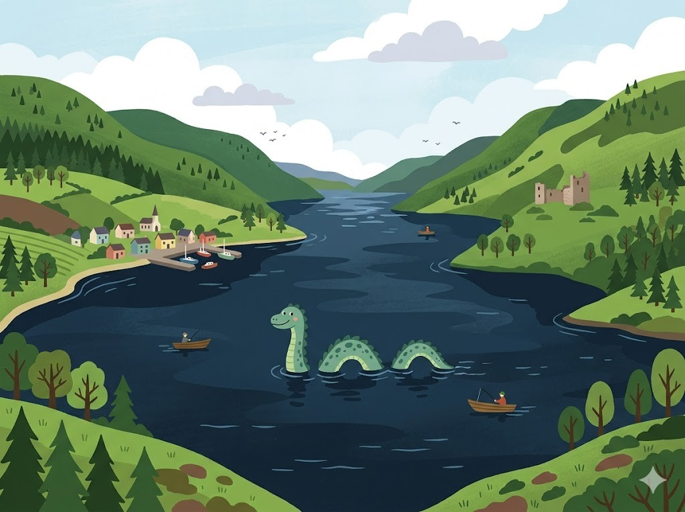
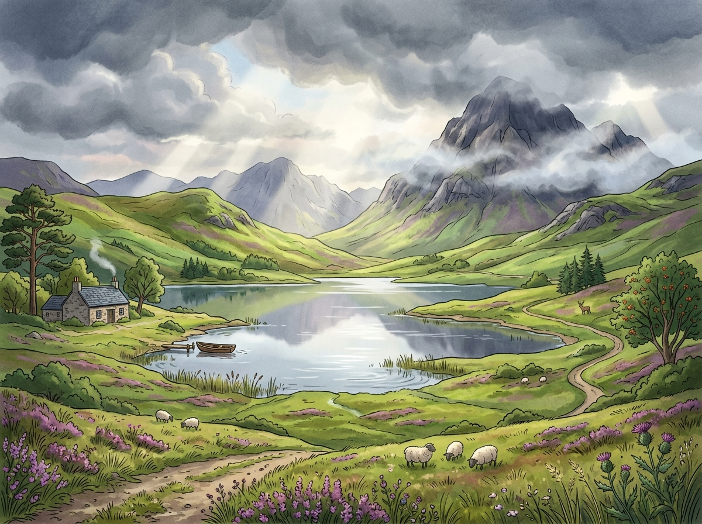
Die HighlandsDie Highlands sind das Bergland von Schottland. Dort gibt es weite Wiesen und viele Seen. Oft hängt Nebel über den grünen Hügeln. Schafe und Hochlandrinder grasen im Freien. Das Wetter wechselt hier sehr schnell.
Grüne Wörter für die AppHighlandsBerglandSeenNebelHochlandrinder
Der Berg Ben NevisDer Ben Nevis ist der höchste Berg von Schottland. Er ist sogar der höchste Berg von ganz Großbritannien. Oben ist es oft kalt und neblig. Viele Wanderer steigen trotzdem nach oben. Der Weg dauert mehrere Stunden.
Grüne Wörter für die AppBen Nevishöchste Bergvon ganz GroßbritanniennebligWanderer
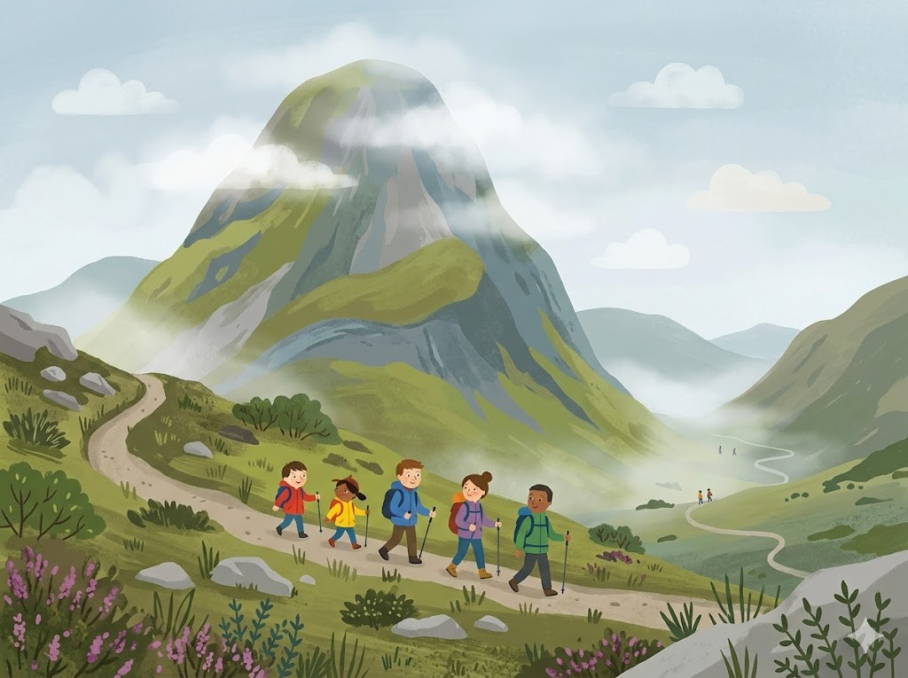
Diese Tiere leben in Schottland und sind ganz besonders.
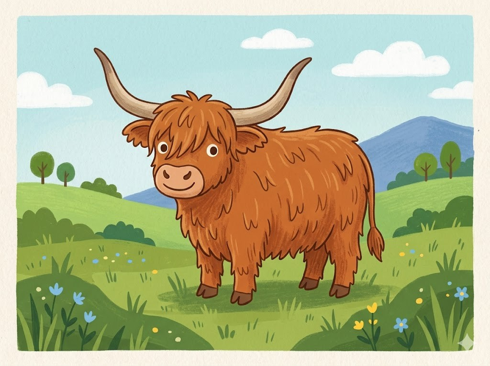
Das HochlandrindDas Hochlandrind hat ein langes zotteliges Fell. Wegen des Fells friert es auch im Winter nicht. Auf dem Kopf trägt es große geschwungene Hörner. Es grast ruhig auf den Wiesen der Highlands. Sein Fell ist oft rotbraun.
Grüne Wörter für die AppHochlandrindzotteliges FellHörnerHighlandsrotbraun
Der PapageitaucherDer Papageitaucher ist ein kleiner Seevogel. Sein Schnabel leuchtet bunt in Rot und Gelb. An den Küsten brütet er in Höhlen am Felsen. Zum Fressen taucht er nach kleinen Fischen. Im Wasser ist er ein guter Schwimmer.
Grüne Wörter für die AppPapageitaucherSeevogelSchnabelam FelsenFischen
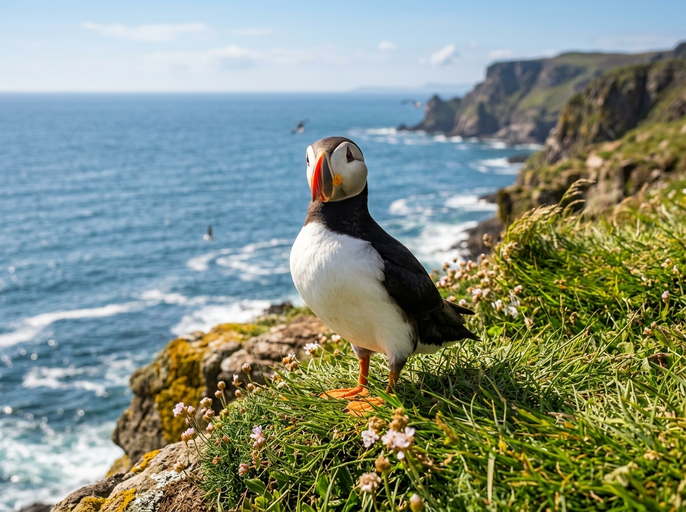
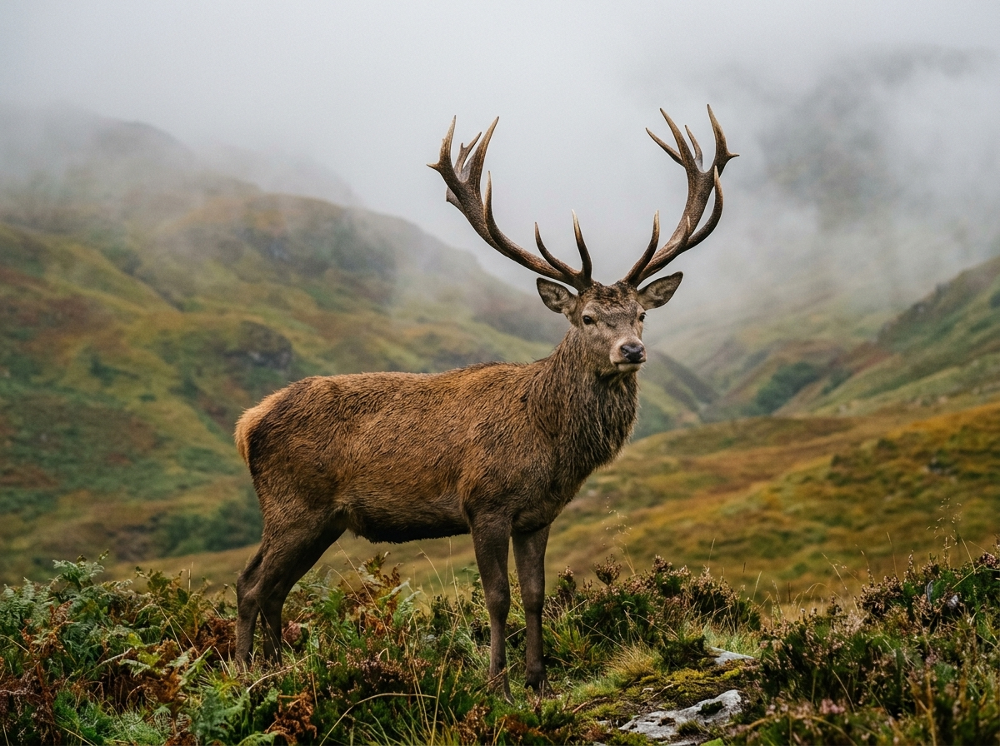
Der RothirschIn den Wäldern und Bergen leben Rothirsche. Der männliche Hirsch trägt ein großes Geweih. Besonders im Herbst ruft er laut über die Täler. Rothirsche fressen Gräser, Blätter und Knospen. Sie sind die größten wilden Tiere des Landes.
Grüne Wörter für die AppRothirscheGeweihim HerbstGräser, Blätter und Knospengrößten wilden Tiere
In der App kannst du beim Essen das Foto nehmen oder dein Gericht selbst malen.
PorridgePorridge ist ein warmer Haferbrei. Viele essen ihn morgens zum Frühstück. Er wird aus Haferflocken und Milch gekocht. Oben drauf kommen oft Beeren oder Honig. Der Brei macht satt und wärmt an kalten Tagen.
Grüne Wörter für die AppPorridgeHaferbreiFrühstückHaferflockenHonig
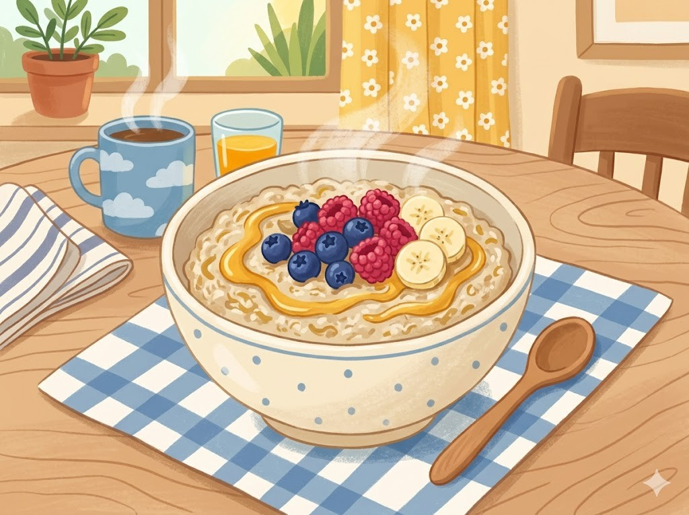
ShortbreadShortbread ist ein buttriges Keksgebäck. Es ist süß und zergeht fast im Mund. Aus nur wenigen Zutaten wird der Teig gemacht. Oft hat es die Form von kleinen Fingern. Zum Tee schmeckt es besonders gut.
Grüne Wörter für die AppShortbreadKeksgebäcksüßwenigen ZutatenTee
Fish and ChipsFish and Chips isst man in ganz Schottland gern. Es gibt gebackenen Fisch mit dicken Pommes. Oft holt man das Essen in einer Tüte ab. Dazu gibt es Essig oder Salz. Frisch schmeckt es am allerbesten.
Grüne Wörter für die AppFish and Chipsgebackenen FischPommesEssig oder SalzFrisch
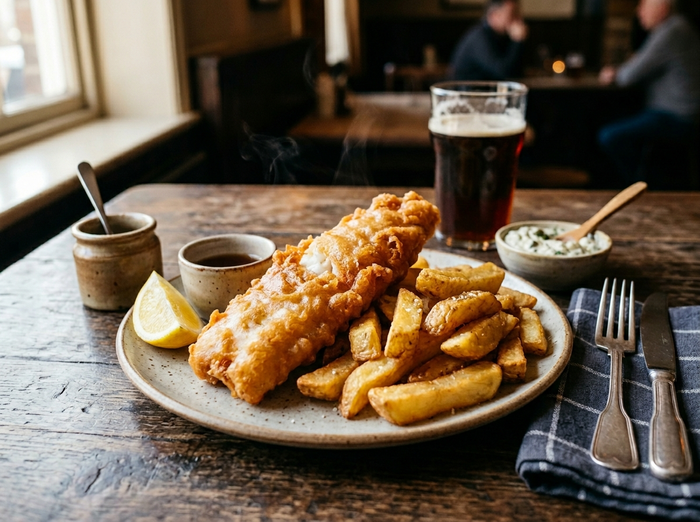
Die Fans von Schottland nennt man die Tartan Army. Schottland hat sich für die WM 2026 qualifiziert. Das war nach vielen Jahren wieder einmal geschafft. Der bekannteste Spieler ist Scott McTominay. Er spielt in Italien bei Napoli.
Grüne Wörter für die AppTartan ArmyWM 2026nach vielen JahrenScott McTominayNapoli
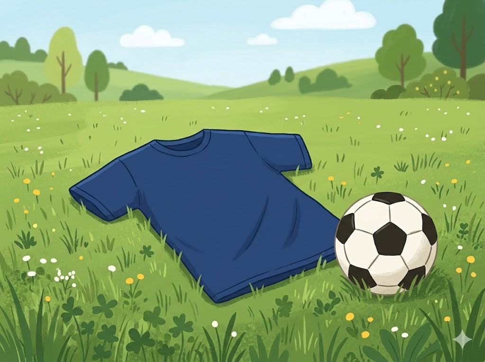
In der SchuleDie Kinder in Schottland sprechen Englisch. Manche lernen auch ein paar Wörter Gälisch. Viele tragen in der Schule eine Schuluniform. Das Wetter ist oft kühl und regnerisch. Darum haben die Kinder fast immer eine Jacke dabei.
Grüne Wörter für die AppEnglischGälischSchuluniformkühl und regnerischJacke
Feste und MusikIn Schottland gibt es eine besondere Musik. Sie kommt aus einem Instrument, dem Dudelsack. Bei Festen tragen manche Männer einen Kilt. Das ist ein karierter Rock aus Schottland. Dazu wird oft getanzt.
Grüne Wörter für die AppMusikDudelsackKiltkarierter Rockgetanzt
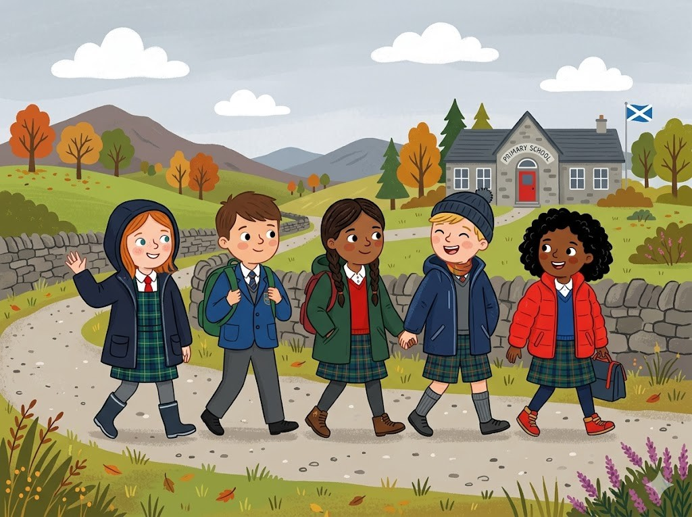